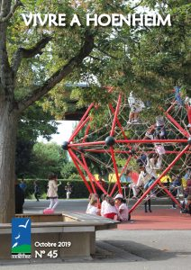

Le mag
Vivre à Hoenheim N°49

Retrouvez dans ce dernier numéro de l’année 2020 : un état des lieux sur les travaux en cours et les projets ainsi qu’un article sur la réfection d’une maison alsacienne, un retour sur l’édition 2019 du Téléthon, quelques pages sur la magie de Noël dans notre ville grâce aux illuminations et des recettes de nos […]
Vivre à Hoenheim N°48

Dans cette édition: la reprise de la saison culturelle dans le respect des mesures barrières et l’ouverture de la nouvelle école de musique, un retour sur la tournée des écoles, l’avancement des travaux sur différents sites de la ville ainsi que l’offre de service complétée au quartier du Ried, par l’ouverture d’un supermarché et d’un […]
Vivre à Hoenheim N°47

Dans ce numéro ; votre nouvelle municipalité, un dossier spécial sur des actions bénévoles de solidarité menées durant le confinement, comment fabriquer son compost…
Vivre à Hoenheim N°46

Au sommaire : projet de restructuration du centre socioculturel, viabilité hivernale, agenda des associations…
Vivre à Hoenheim N°45

Au programme : dossier sur la rentrée des classes, programmation des animations culturelles, présentation du nouveau directeur du centre socioculturel…